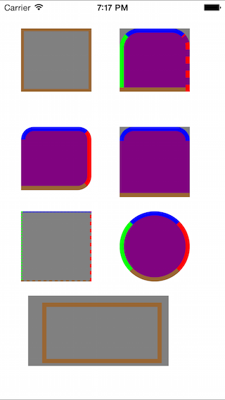

YRBorderView简介
开发中经常遇到给某个view增加边线和角度，总觉得使用Layer的Border功能不够，比如只给某个边加一条边线等等。最近闲来无事，便做了这个小View。用于各种边线和圆角效果的处理:YRBorderView。
---若转载请注明出处- YueRuo's Blog - http://yueruo.github.io ---
基于CoreGraphics进行的绘制，相比系统自身的Layer功能更加强大和灵活，layer的border只能是相同颜色相同粗细相同弧度。而YRBorderView边线支持4个方向的边线定制粗细、颜色、是否显示。同时4个角分别支持不同弧度设置。
另外，支持view裁切掉边线外面的部分（图中view的背景灰色被裁掉了）。
详细的效果可以看下图的5个view。其中的灰色是view的背景色，紫色是边线内填充色。

其他的就不多说什么了，有兴趣的可以自己去看看其内部实现。或者可以自己去扩展做一个view的category玩一玩。
Comments
comments powered by Disqus